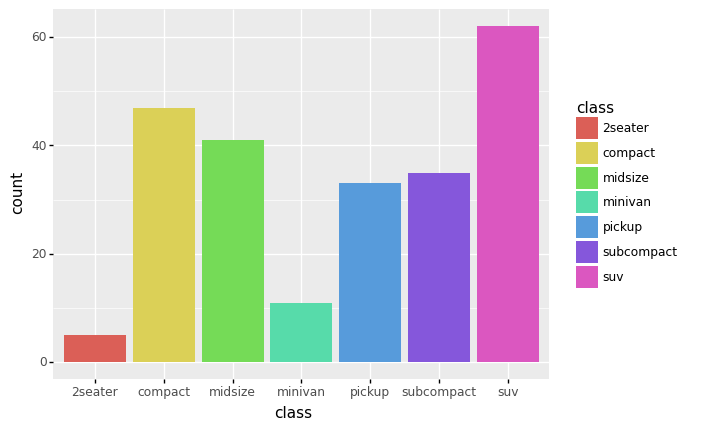
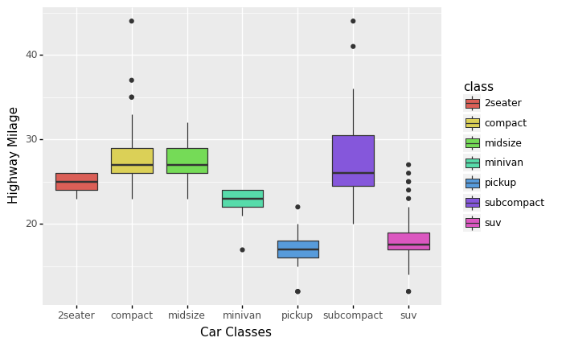
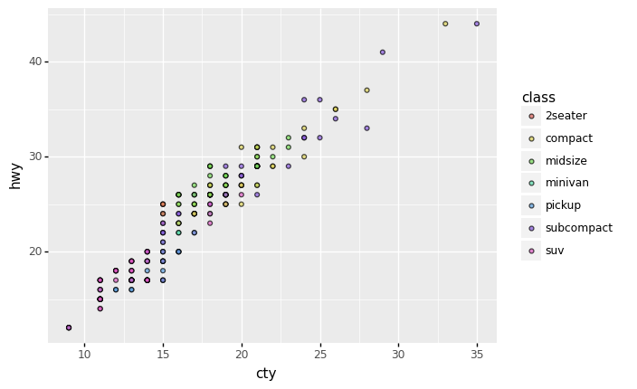
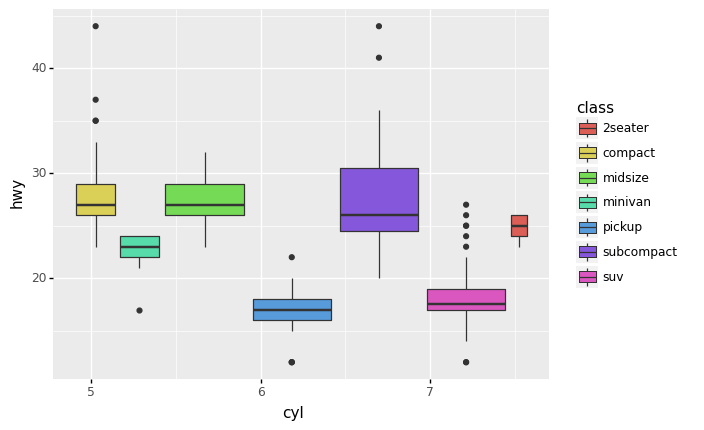
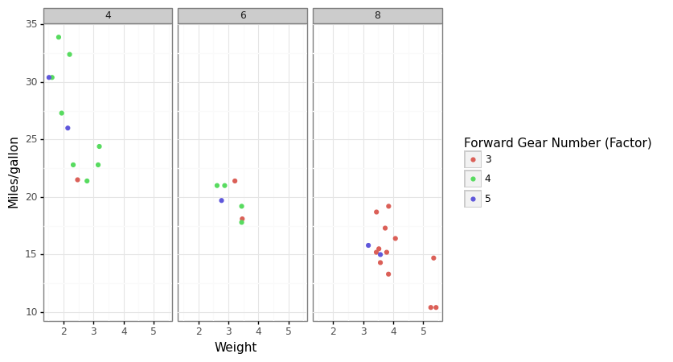
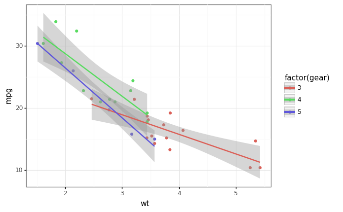
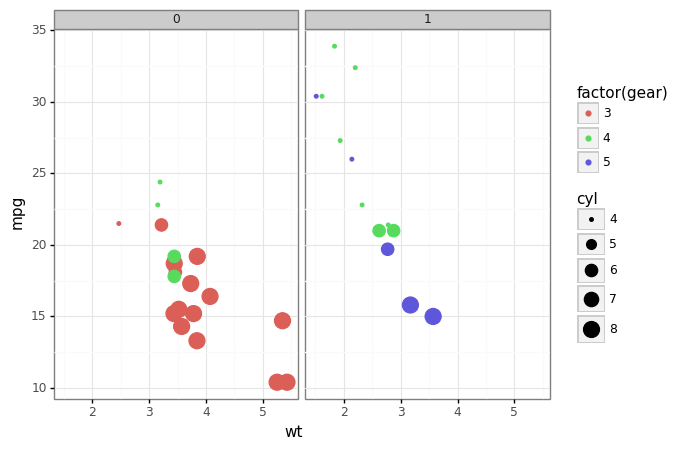
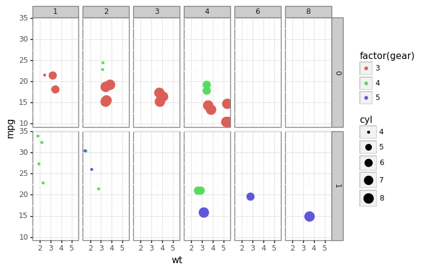

Data Visualization 2¶
This unit covers the layered framework for data visualization, i.e., the Grammar of Graphics.
The codes implement the ideas of layered graph building using the module,
plotnine, which is essentially the Python version of R ggplot2.
import numpy as np
import pandas as pd
from plotnine import *
from plotnine.data import mpg, mtcars
%matplotlib inline
type(mpg)
pandas.core.frame.DataFrame
Data Frame Preparation¶
pd.DataFrame.head(mpg)
| manufacturer | model | displ | year | cyl | trans | drv | cty | hwy | fl | class | |
|---|---|---|---|---|---|---|---|---|---|---|---|
| 0 | audi | a4 | 1.8 | 1999 | 4 | auto(l5) | f | 18 | 29 | p | compact |
| 1 | audi | a4 | 1.8 | 1999 | 4 | manual(m5) | f | 21 | 29 | p | compact |
| 2 | audi | a4 | 2.0 | 2008 | 4 | manual(m6) | f | 20 | 31 | p | compact |
| 3 | audi | a4 | 2.0 | 2008 | 4 | auto(av) | f | 21 | 30 | p | compact |
| 4 | audi | a4 | 2.8 | 1999 | 6 | auto(l5) | f | 16 | 26 | p | compact |
pd.DataFrame.head(mtcars)
| name | mpg | cyl | disp | hp | drat | wt | qsec | vs | am | gear | carb | |
|---|---|---|---|---|---|---|---|---|---|---|---|---|
| 0 | Mazda RX4 | 21.0 | 6 | 160.0 | 110 | 3.90 | 2.620 | 16.46 | 0 | 1 | 4 | 4 |
| 1 | Mazda RX4 Wag | 21.0 | 6 | 160.0 | 110 | 3.90 | 2.875 | 17.02 | 0 | 1 | 4 | 4 |
| 2 | Datsun 710 | 22.8 | 4 | 108.0 | 93 | 3.85 | 2.320 | 18.61 | 1 | 1 | 4 | 1 |
| 3 | Hornet 4 Drive | 21.4 | 6 | 258.0 | 110 | 3.08 | 3.215 | 19.44 | 1 | 0 | 3 | 1 |
| 4 | Hornet Sportabout | 18.7 | 8 | 360.0 | 175 | 3.15 | 3.440 | 17.02 | 0 | 0 | 3 | 2 |
Basic Graphs¶
(ggplot(mpg) +
aes(x = 'class', fill = 'class') +
geom_bar(size=20))

<ggplot: (8768857102863)>
(
ggplot(mpg) +
aes(x = 'class', y = 'hwy', fill = 'class') +
geom_boxplot() +
labs(x = 'Car Classes', y = 'Highway Milage')
)

<ggplot: (-9223363267997667068)>
(
ggplot(mpg) +
aes(x = 'cty', y = 'hwy', fill = 'class') +
geom_point(alpha = .7)
)

<ggplot: (8768890666118)>
(
ggplot(mpg) +
aes(x = 'cyl', y = 'hwy', fill = 'class') +
geom_boxplot()
)

<ggplot: (-9223363267964354160)>
More Complex Graphs¶
Visualize four-dimensions (4-D)
(
ggplot(mtcars, aes('wt','mpg', color='factor(gear)')) +
geom_point() +
facet_wrap('~cyl')+
theme_bw()+
labs(x='Weight', y='Miles/gallon')+
scale_color_discrete(name='Forward Gear Number (Factor)')
)

<ggplot: (8790439802589)>
(
ggplot(mtcars, aes('wt','mpg',color='factor(gear)'))+
geom_point()+
geom_smooth(method="lm")+
theme_bw()
)

<ggplot: (8790439796909)>
Visualize 5-D
x
y
facet
color
size
(
ggplot(mtcars, aes('wt','mpg',color='factor(gear)', size='cyl'))+
geom_point()+
facet_wrap('~am')+
theme_bw()
)

<ggplot: (8790473692333)>
Visualize 6-D
x
y
facet (2 dimensions)
color
size
(
ggplot(mtcars, aes('wt', 'mpg', color='factor(gear)', size='cyl'))+
geom_point()+
facet_grid('am~carb')+
theme_bw()
)

<ggplot: (8790493271545)>
More?¶
Check Hans Rosling’s famous visualization of global population (a dynamic graphing)